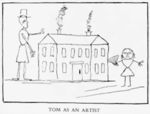

Sources
drawing by Twain

picture courtesy of "Mark Twain in His Time"
Benson, Ivan. Mark Twain's Western Years. Stanford: Stanford University Press, 1938.
Image Files: AngelsCampCA, AngelsCampWindow, JackassHillCabin, VirginiaCity, VirginiaCityWindow
Clemens, Susy. Papa: An Intimate Biography of Mark Twain, ed. Charles Neider. Garden City, NY: Doubleday & Company, 1985.
Image Files: GazeboStudy, GazeboWindow, HartfordDiningRoom, HartfordLibraryMantlewithEmmaline
Hay, Hamilton Ian. Summer In Paradise: Mark Twain at Dollis Hill House. London: Dollis Hill House Trust, 2002
Jerome, Robert D. and Wisbey, Jr., Herbert A. Mark Twain in Elmira. Elmira, NY: Mark Twain Society, Inc, 1977.
Image Files: Grave, Graveyard, QuarryFarmHouse, QuarryFarmInterior, QuarryFarmWindow
The Library of Congress "American Memory". "The Chinese Minister, Wu Ting Fong, his wife, and Wu Chu, his son, in their parlor at the Occidental Hotel". http://memory.loc.gov/ammem/index.html.
Image File: InteriorOccidentalHotel
Mark Twain State Historic Site. http://www.mostateparks.com/twainsite/geninfo.htm.
Image File: FloridaInterior
Meltzer, Milton. Mark Twain Himself. New York: Wings Books, 1960.
Image Files: HartfordLayout, NewYorkApartment, NYApartmentWindow, SanFranHouse, SanFranWindow, StormfieldHouse, StormfieldWindow
Railton, Stephen. "Mark Twain in His Times". http://twain.lib.virginia.edu/index.html
Image Files: Ferguson1, HannibalHouse, HannibalWindow, HuckFinnCover, IllustrationQuarles, InnocentsCover, InsideHannibal, InsideHannibal2, InsideVACity, InsideWaveHill, JumpingFrog, LifeonMississippiCover, MarkinBuffalo, MarkTwaininBed, MissRiverPilot, mtprint14h, PuddnheadCover, RoughingItCover, tomhouse, TomSawyerCover, YankeeCover
Rodney, Robert M. Mark Twain Overseas. Washington, D.C.: Three Continents Press, Inc, 1993.
Image File: QuakerCity, QuakerCityWindow
Simboli, Raffaele. "Mark Twain From an Italian Point of View" The Critic (June 1904)
Image File: FlorenceVilla
The Mark Twain House and Museum, Hartford, CT
Image Files: DrawingRoomHartford, FamilyOmbra, FrontHallHartford, hartfordhouse, HartfordWindow
Twain, Mark. Mark Twain's Aquarium: the Samuel Clemens--Angelfish Correspondence, 1905-1910, ed. John Cooley. Athens, Georgia: The University of Georgia Press, 1991.
Twain, Mark. Mark Twain's Letters, Volume 1, ed. Albert Bigelow Paine. New York: Harper & Brothers Publishers, 1917
Twain, Mark. Mark Twain's Letters, Volume 1, 1853-1866, ed. Edgar Marquess Branch, Michael B. Frank, Kenneth M. Sanderson; assoc. ed. Harriet Elinor Smith, Lin Salamo, Richard Bucci. Berkley: University of California Press, 1988.
Twain, Mark. Mark Twain's Letters, Volume 2, 1867-1868, ed. Harriet Elinor Smith, Richard Bucci; assoc. ed. Lin Salamo. Berkley: University of California Press, 1990.
Twain, Mark. Mark Twain's Letters, Volume 3, 1869, ed. Victor Fischer, Michael B. Frank; assoc. ed. Dahlia Armon. Berkley: University of California Press, 1992.
Twain, Mark. Mark Twain's Letters, Volume 4, 1870-1871, ed. Victor Fischer, Michael B. Frank; assoc. ed. Lin Salamo. Berkley: University of California Press, 1995.
Twain, Mark. Mark Twain's Letters, Volume 5, 1872-1873, ed. Lin Salamo, Harriet Elinor Smith. Berkley: University of California Press, 1997.
Twain, Mark. Mark Twain's Letters, Volume 6, 1874-1875, ed. Michael B. Frank, Harriet Elinor Smith. Berkley: University of California Press, 2002.
Twain, Mark. Mark Twain's Letters, 1876-1880: An Electronic Edition. Berkley: University of California Press, 2003.
Twain, Mark. Mark Twain's Notebooks and Journals, Volume 3, 1883-1891, ed. Robert Pack Browning, Michael B. Frank, Lin Salamo. Berkely: University of California Press, 1979.
Twain, Mark. The Autobiography of Mark Twain, ed. Charles Neider. New York: Harper & Row Publishers, 1959.
Twain, Mark. The Selected Letters of Mark Twain, ed. Charles Neider. New York, NY: Harper & Row, Publishers, 1982
Villa Viviani. http://www.villaviviani.it/english/villa_uk.htm.
Image Files: VillaViviani, VillaViviani2, VillaVivianiWindow
Ward, Geoffrey C. and Duncan, Dayton. Mark Twain. New York: Alfred A. Knopf, 2001.
Image Files: AboardQuakerCity, BilliardStudyRoom, BuffaloNYHouse, BuffaloNYWindow, DollisHillLounging, DollisHillOutside, DollisHillWindow, ElmiraGazeboInterior1, ElmiraGazeboView, FloridaHome, FloridaHouse1, FloridaWindow, HartfordBed, HartfordConservatory, InsideLangdonElmiraHome, InteriorStormfield, InteriorStormfield2, LangdonHomeElmira, LangdonElmiraWindow, MississippiRiverBoat, QuarlesHome, QuarlesWindow, WaveHillHouse, WaveHillWindow
Willard Inter-Continental Washington. http://washington.intercontinental.com/.
Image Files: WillardHotel, WillardPeacockAlley, WillardRoundRobinBar, willardwindow
Willis, Resa. Mark and Livy: The Love Story of Mark Twain and the Woman Who Almost Tamed Him. New York: Atheneum Publishers, 1992
World Atlas Website. http://www.worldatlas.com.
Image Files: europe map, usamap